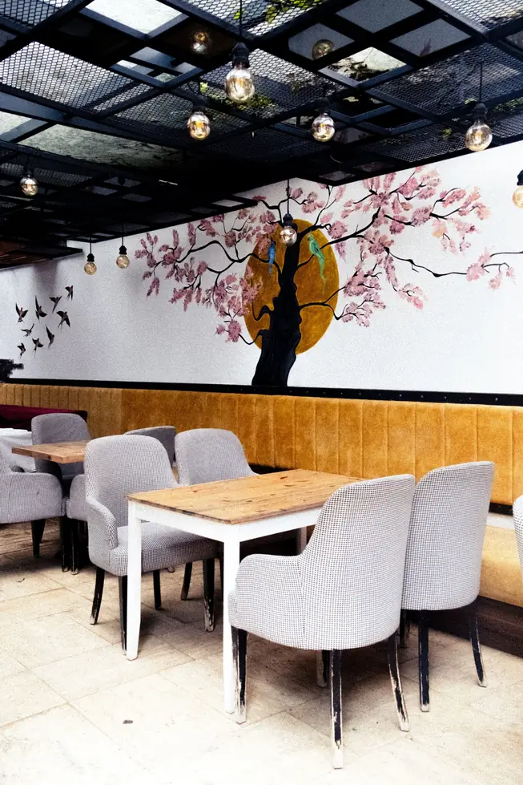
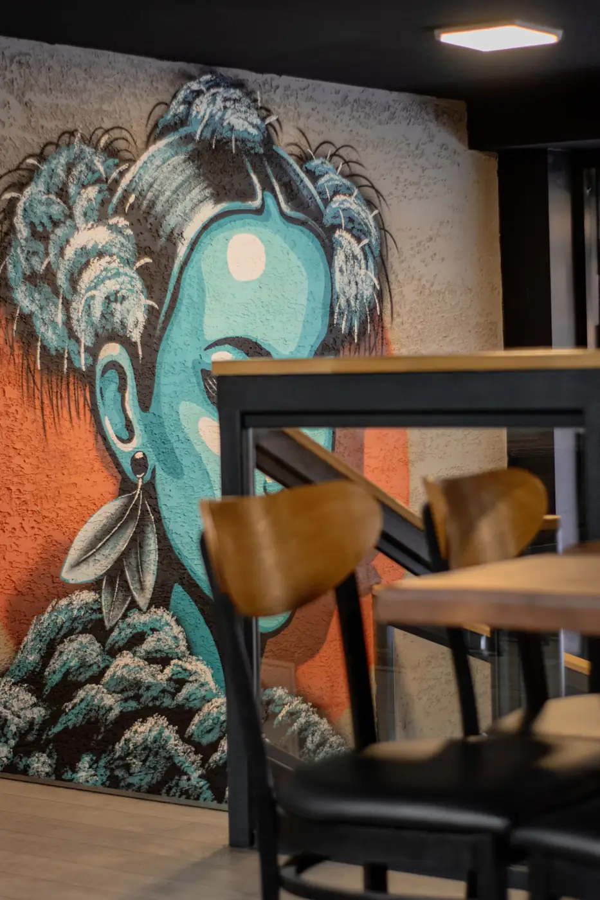
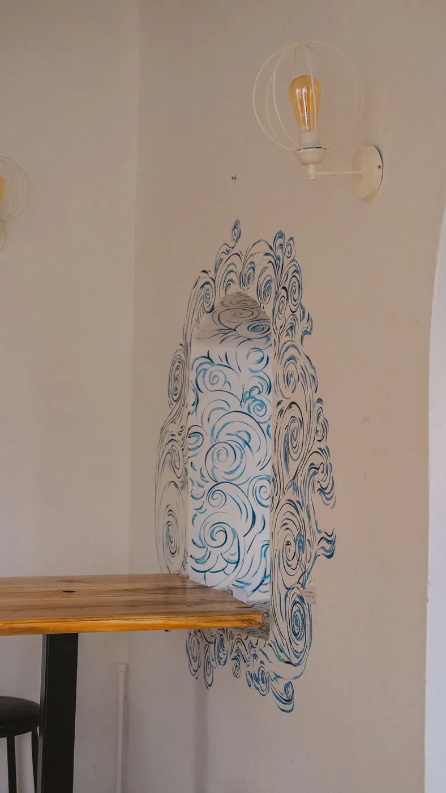
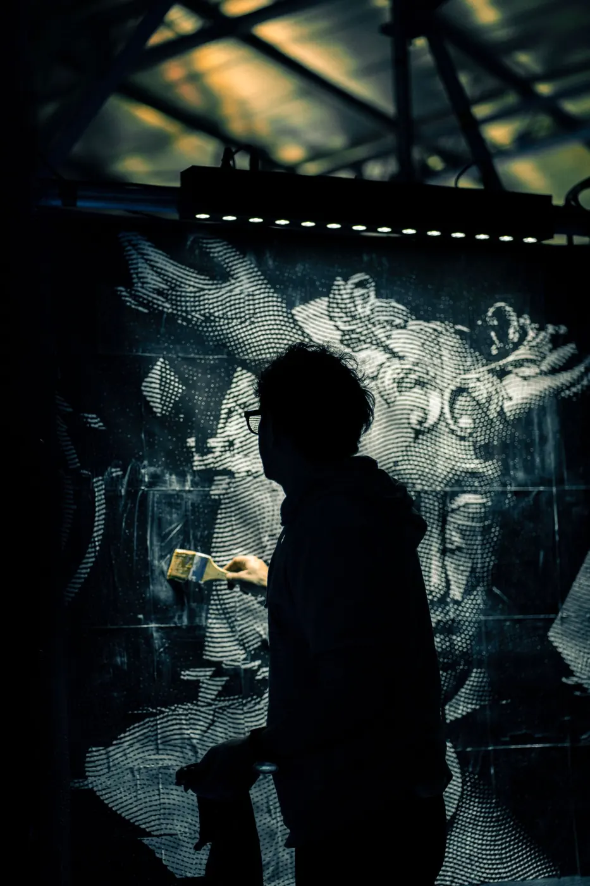
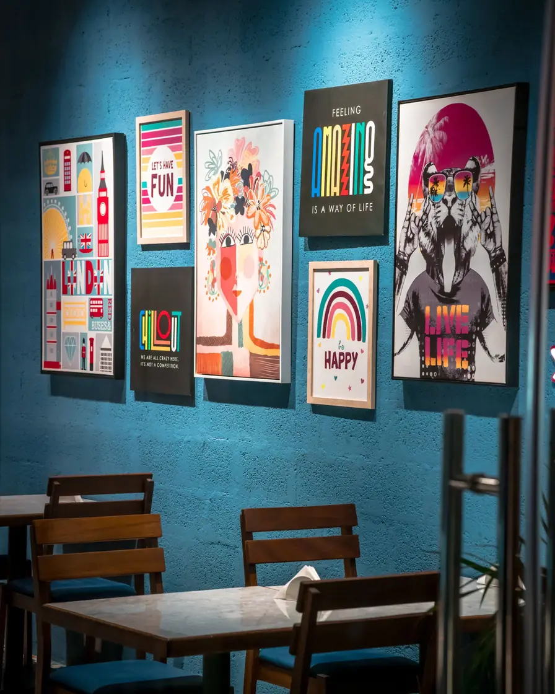
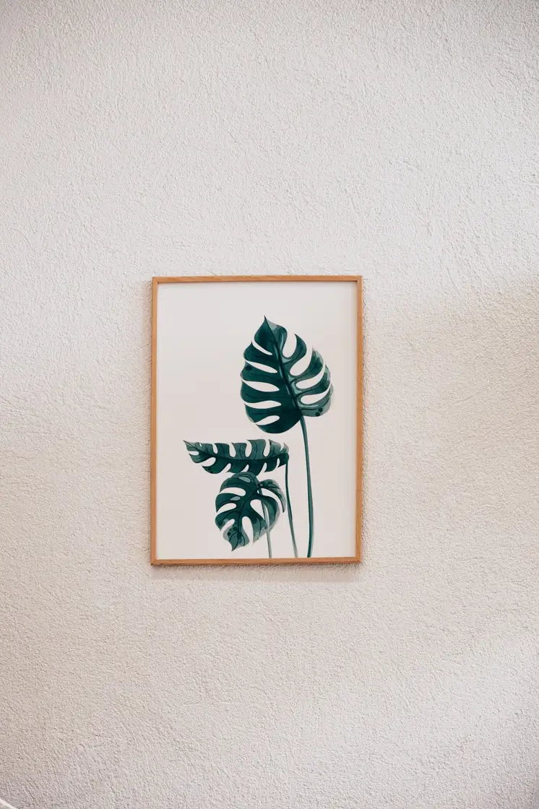
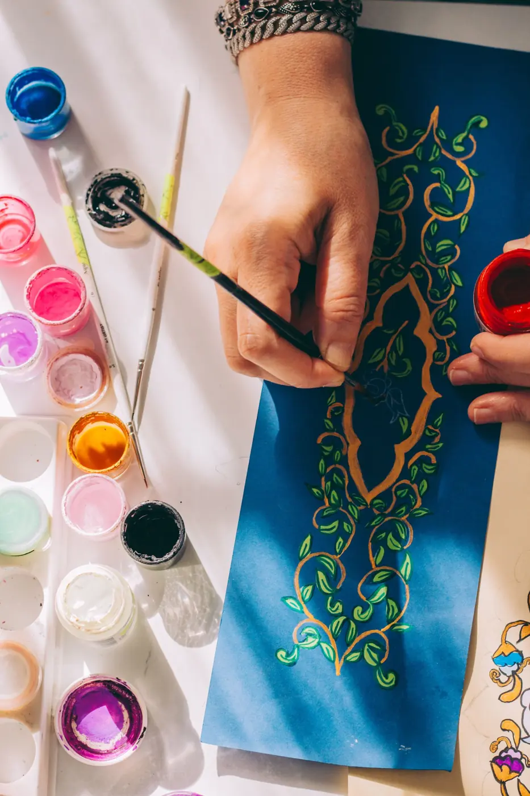
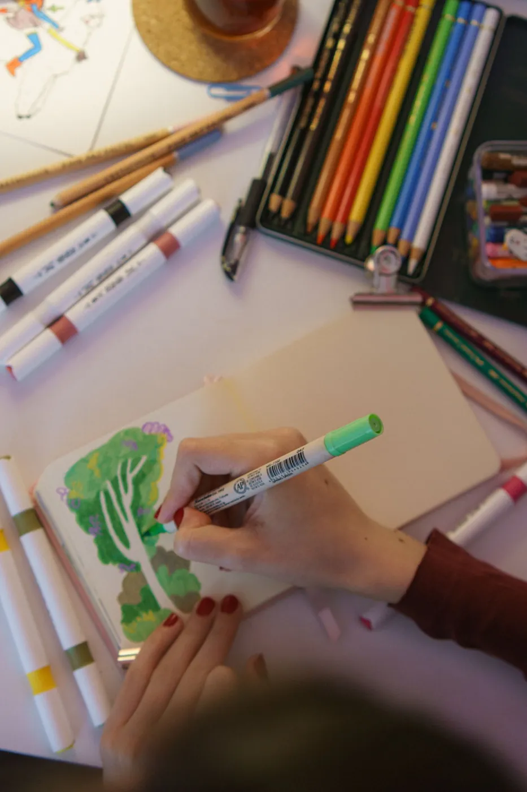
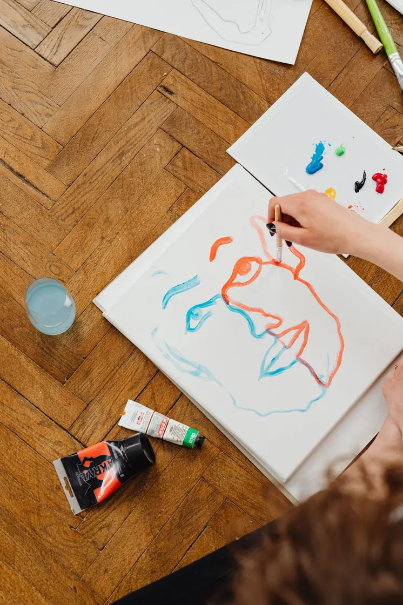
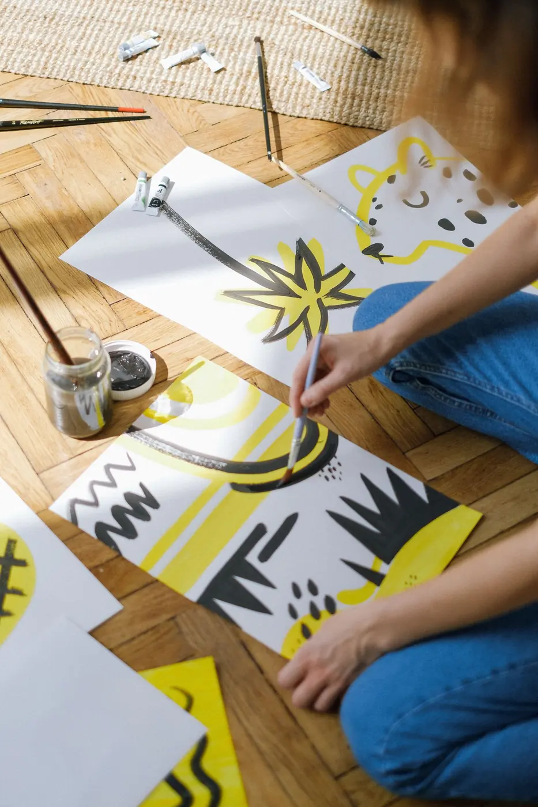

0%
A growing archive of originals, editions and studies. Filter by medium, click any piece to look closer.


Every package includes weekly progress photos, one round of colour changes and signed delivery. 50% to begin, 50% on approval.
A small original or digital piece — a perfect first collection.
A large original sized for a living room, studio or lobby.
Walls, shopfronts or a matched set of 4+ works.
No templates, no stock. Every piece is drawn for the person who will live with it.
Weekly photos and proof approvals in your collector dashboard.
Museum-grade pigments, cotton papers and UV-protective varnish.
Custom crating, tracking and a certificate of authenticity with every original.
We talk about the space, the story and the feeling you want to live with.
Three thumbnail directions and a colour palette, so you can choose with your eyes.
Weekly progress photos in your collector dashboard. Feedback welcome at any stage.
Signed, varnished, crated and shipped — or installed on site by the studio.
“The mural turned a plain stairwell into the first thing every guest talks about. The weekly progress photos made it feel like we were painting it too.”JM
“Her colour sense is uncanny. She heard ‘calm but not boring’ and delivered a canvas we still stare at every morning.”PS
“Fixed price, honest timeline, and a signed print arrived wrapped like a gift. We’ve already booked phase two.”SK
Something else on your mind? Write to the studio — replies within one working day.
Ask the studioYou own the physical piece. Licences for reproduction (books, merchandise, packaging) are agreed and priced separately, in writing.
Most paintings take 4–8 weeks from approved sketch to varnished delivery. Murals depend on wall size; you’ll get a dated schedule in your quote.
Yes — your collector dashboard shows weekly progress photos, proof approvals, invoices and messages from the studio.
Yes. Works ship in custom crates with tracking and insurance. Prints ship rolled or flat-packed depending on size.












Tell me about the wall, the mood, the story. You’ll get a sketch direction and a clear quote within 3 working days.